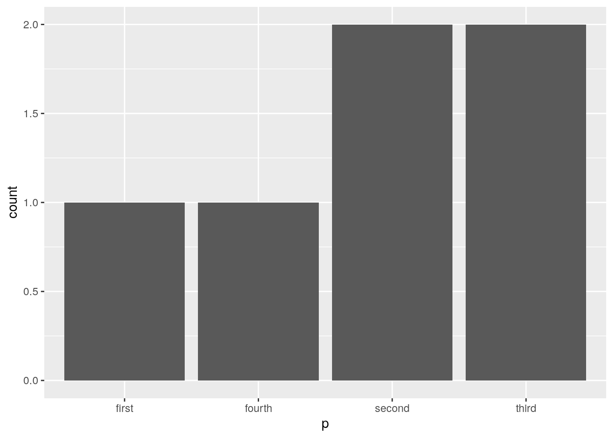
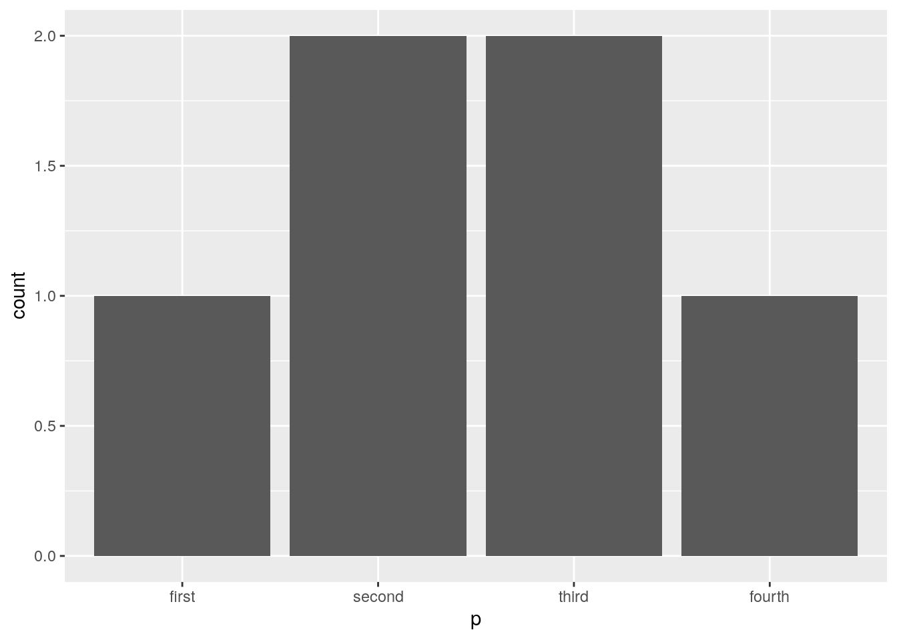

Chapter 2 Fundamentals
Welcome to Intermediate R! Each week, we cover a chapter, which consists of a lesson and exercise. In the first week, we go over the goals of the course, and review data structures and data types that you have seen before from Intro to R. We also look at some new data structures and more properties of data structures.
In Intro to R, you learned how to do basic data analysis such as subsetting a dataframe, looking at summary statistics, and visualizing your data. This was done in the context of a clean, Tidy dataframe. In this course, we focus on working with data “from the wild”, in which the data comes in a more messy, un-Tidy form. Let’s see what we will learn in the next 6 weeks together:
2.1 Goals of this course
Continue building programming fundamentals: How to use complex data structures, use and create custom functions, and how to iterate repeated tasks.
Continue exploration of data science fundamentals: how to clean messy data to a Tidy form for analysis.
At the end of the course, you will be able to: conduct a full analysis in the data science workflow (minus model).

To get started, let’s recall the fundamental data types in R:
2.2 Data types in R
Numeric: 18, -21, 65, 1.25
Character: “ATCG”, “Whatever”, “948-293-0000”
Logical: TRUE, FALSE
Missing values:
NA
And the fundamental data structures: in this course, we will learn more about a new, flexible data structure called a List. We also lightly introduce Factor and Matrix, but they will not be used for the rest of the course.
2.4 Vector
We know what an (atomic) vector is: it can contains a data type, and all elements must be the same data type. If a vector consists of only numeric data, then it is a Numeric Vector, etc. We organize vector subtypes by the following graphic:

Within the Numeric type that we are familiar with, there are more specific types: Integer consists of whole number values, and Double consists of decimal values. Most of the time we only need to consider Numeric types, but once in a while we need to be more specific.
Now that we have distinguished vector subtypes, it is important to examine what a vector is by inspection:
We can test whether a vector is a certain type with
is.___()functions, such asis.character().## [1] TRUE## [1] FALSEWe can also test for missing data
NAfor any types of vector: The test will return a vector testing each element, becauseNAcan be mixed into other values:## [1] FALSE TRUE
We can coerce vectors from one type to the other with as.___() functions, such as as.numeric().
## [1] 23 45## [1] 1 0This is very common in data cleaning, when we load in data and they assigned to the wrong data type.
Sometimes, a data structure may have metadata attributes associated with them. This gives us more information about the data structure, but doesn’t contain the important data.
For instance, a common attribute is names, which can attached to vectors.
## a b c
## 1 2 3
We can look for more general attributes beyond names via the attributes() function:
## $names
## [1] "a" "b" "c"Now, let’s review the ways one can subset a vector. Here are three ways:
Positive numeric vector
## [1] 2 -1 2Negative numeric vector performs exclusion
## [1] -1 -3 2 -1 10- Logical vector
## [1] 2 -1 2In practice, we often subset a vector implicitly, via some kind of criteria. Here is a review of implicit subsetting from Intro to R. Let’s review implicit vector subsetting below:
- How do you subset the following vector so that it only has positive values?
## [1] 2 4 2 10- How do you subset the following vector so that it has doesn’t have the character “temp”?
## [1] "object" "wish" "bumblebee"- How do you subset the following vector so that it has no
NAvalues?
## [1] 2 4 32.5 Factors
Factors are a type of vector that holds categorical information, such as sex, gender, or cancer subtype. They are useful for:
When you know you have a fixed number of categories.
When you want to display character vectors in a non-alphabetical order, which is common in plotting.
Inputs for statistical models, as factors are a special type of numerical vectors.
Let’s take a look at Factors in practice:
## [1] first third third second second fourth
## Levels: first fourth second third
We can construct Ordered Factors:
place = ordered(c("first", "third", "third", "second","second", "fourth"), levels = c("first", "second", "third", "fourth"))
place## [1] first third third second second fourth
## Levels: first < second < third < fourth
2.6 Dataframes
Usually, we load in a Dataframe from a spreadsheet or a package, but we can create a new dataframe by using vectors of the same length via the data.frame() function:
## x y
## 1 1 cup
## 2 2 mug
## 3 3 jarWe have attributes for Dataframes. The most important attribute is names, which correspond to the column names of a Dataframe. You have been using it for a while already!
## $names
## [1] "x" "y"
##
## $class
## [1] "data.frame"
##
## $row.names
## [1] 1 2 3We can directly access the names attribute via names() or colnames():
## [1] "x" "y"Here is another example:
## $class
## [1] "tbl_df" "tbl" "data.frame"
##
## $row.names
## [1] 1 2 3 4 5 6 7 8 9 10 11 12 13 14 15 16 17 18
## [19] 19 20 21 22 23 24 25 26 27 28 29 30 31 32 33 34 35 36
## [37] 37 38 39 40 41 42 43 44 45 46 47 48 49 50 51 52 53 54
## [55] 55 56 57 58 59 60 61 62 63 64 65 66 67 68 69 70 71 72
## [73] 73 74 75 76 77 78 79 80 81 82 83 84 85 86 87 88 89 90
## [91] 91 92 93 94 95 96 97 98 99 100 101 102 103 104 105 106 107 108
## [109] 109 110 111 112 113 114 115 116 117 118 119 120 121 122 123 124 125 126
## [127] 127 128 129 130 131 132 133 134 135 136 137 138 139 140 141 142 143 144
## [145] 145 146 147 148 149 150 151 152 153 154 155 156 157 158 159 160 161 162
## [163] 163 164 165 166 167 168 169 170 171 172 173 174 175 176 177 178 179 180
## [181] 181 182 183 184 185 186 187 188 189 190 191 192 193 194 195 196 197 198
## [199] 199 200 201 202 203 204 205 206 207 208 209 210 211 212 213 214 215 216
## [217] 217 218 219 220 221 222 223 224 225 226 227 228 229 230 231 232 233 234
## [235] 235 236 237 238 239 240 241 242 243 244 245 246 247 248 249 250 251 252
## [253] 253 254 255 256 257 258 259 260 261 262 263 264 265 266 267 268 269 270
## [271] 271 272 273 274 275 276 277 278 279 280 281 282 283 284 285 286 287 288
## [289] 289 290 291 292 293 294 295 296 297 298 299 300 301 302 303 304 305 306
## [307] 307 308 309 310 311 312 313 314 315 316 317 318 319 320 321 322 323 324
## [325] 325 326 327 328 329 330 331 332 333 334 335 336 337 338 339 340 341 342
## [343] 343 344
##
## $names
## [1] "species" "island" "bill_length_mm"
## [4] "bill_depth_mm" "flipper_length_mm" "body_mass_g"
## [7] "sex" "year"Some notes about the other attributes:
Sometimes, Dataframes will be in a format called “tibble”, as shown in the
penguinsclass names as “tbl_df”, and “tbl”.Row names are not commonly used. Here is a reason.
Let’s review how to subset Dataframes. There are many ways to do it, and here are just some opinionated ways of doing it for this class.
Getting one single column:
## [1] 39.1 39.5 40.3 NA 36.7 39.3 38.9 39.2 34.1 42.0 37.8 37.8 41.1 38.6 34.6
## [16] 36.6 38.7 42.5 34.4 46.0 37.8 37.7 35.9 38.2 38.8 35.3 40.6 40.5 37.9 40.5
## [31] 39.5 37.2 39.5 40.9 36.4 39.2 38.8 42.2 37.6 39.8 36.5 40.8 36.0 44.1 37.0
## [46] 39.6 41.1 37.5 36.0 42.3 39.6 40.1 35.0 42.0 34.5 41.4 39.0 40.6 36.5 37.6
## [61] 35.7 41.3 37.6 41.1 36.4 41.6 35.5 41.1 35.9 41.8 33.5 39.7 39.6 45.8 35.5
## [76] 42.8 40.9 37.2 36.2 42.1 34.6 42.9 36.7 35.1 37.3 41.3 36.3 36.9 38.3 38.9
## [91] 35.7 41.1 34.0 39.6 36.2 40.8 38.1 40.3 33.1 43.2 35.0 41.0 37.7 37.8 37.9
## [106] 39.7 38.6 38.2 38.1 43.2 38.1 45.6 39.7 42.2 39.6 42.7 38.6 37.3 35.7 41.1
## [121] 36.2 37.7 40.2 41.4 35.2 40.6 38.8 41.5 39.0 44.1 38.5 43.1 36.8 37.5 38.1
## [136] 41.1 35.6 40.2 37.0 39.7 40.2 40.6 32.1 40.7 37.3 39.0 39.2 36.6 36.0 37.8
## [151] 36.0 41.5 46.1 50.0 48.7 50.0 47.6 46.5 45.4 46.7 43.3 46.8 40.9 49.0 45.5
## [166] 48.4 45.8 49.3 42.0 49.2 46.2 48.7 50.2 45.1 46.5 46.3 42.9 46.1 44.5 47.8
## [181] 48.2 50.0 47.3 42.8 45.1 59.6 49.1 48.4 42.6 44.4 44.0 48.7 42.7 49.6 45.3
## [196] 49.6 50.5 43.6 45.5 50.5 44.9 45.2 46.6 48.5 45.1 50.1 46.5 45.0 43.8 45.5
## [211] 43.2 50.4 45.3 46.2 45.7 54.3 45.8 49.8 46.2 49.5 43.5 50.7 47.7 46.4 48.2
## [226] 46.5 46.4 48.6 47.5 51.1 45.2 45.2 49.1 52.5 47.4 50.0 44.9 50.8 43.4 51.3
## [241] 47.5 52.1 47.5 52.2 45.5 49.5 44.5 50.8 49.4 46.9 48.4 51.1 48.5 55.9 47.2
## [256] 49.1 47.3 46.8 41.7 53.4 43.3 48.1 50.5 49.8 43.5 51.5 46.2 55.1 44.5 48.8
## [271] 47.2 NA 46.8 50.4 45.2 49.9 46.5 50.0 51.3 45.4 52.7 45.2 46.1 51.3 46.0
## [286] 51.3 46.6 51.7 47.0 52.0 45.9 50.5 50.3 58.0 46.4 49.2 42.4 48.5 43.2 50.6
## [301] 46.7 52.0 50.5 49.5 46.4 52.8 40.9 54.2 42.5 51.0 49.7 47.5 47.6 52.0 46.9
## [316] 53.5 49.0 46.2 50.9 45.5 50.9 50.8 50.1 49.0 51.5 49.8 48.1 51.4 45.7 50.7
## [331] 42.5 52.2 45.2 49.3 50.2 45.6 51.9 46.8 45.7 55.8 43.5 49.6 50.8 50.2I want to select columns bill_length_mm, bill_depth_mm, species, and filter for species that are “Gentoo”:
penguins_select = select(penguins, bill_length_mm, bill_depth_mm, species)
penguins_gentoo = filter(penguins_select, species == "Gentoo")or
penguins_select_2 = penguins[, c("bill_length_mm", "bill_depth_mm", "species")]
penguins_gentoo_2 = penguins_select_2[penguins$species == "Gentoo" ,]or
penguins_gentoo_2 = penguins_select_2[penguins$species == "Gentoo", c("bill_length_mm", "bill_depth_mm", "species")]I want to filter out rows that have NAs in the column bill_length_mm:
or
2.7 Lists
Lists are the most flexible data structure in R, as they can contain a flexible amount and type of information. They operate similarly as vectors as they group data into one dimension, but each element of a list can be any data type or data structure!

Unlike vectors, you access the elements of a list via the double bracket [[]]. You access a smaller list with single bracket []. (More discussion on the different uses of the bracket here and here.)
Use unlist() to coerce a list into a vector. Notice all the automatic coersion that happened for the elements.
## [1] "1" "2" "3" "a" "TRUE" "FALSE" "TRUE" "2.3" "5.9"We can give the attribute names to lists:
l1 = list(
ranking = 1:3,
name = "a",
success = c(TRUE, FALSE, TRUE),
score = c(2.3, 5.9)
)
#or
names(l1) = c("ranking", "name", "success", "score")And access named elements of lists via the $ operation:
## [1] 2.3 5.9Therefore, l1$score is the same as l1[[4]] and is the same as l1[["score"]].
Here’s an interesting connection between Lists and Dataframes that we will make use of later on in this course: A Dataframe is just a named list of vectors of same length with additional attributes of (column) names and row.names!
2.8 Matrix
A matrix holds information of the same data type in two dimensions - it’s like a two dimensional vector. Matricies are most often used in statistical computing and matrix algebra, such as creating a design matrix. They are often created by taking a vector and reshaping it with a set number of rows and columns, or converting from a dataframe with only one data type.
## [,1] [,2] [,3] [,4] [,5]
## [1,] 1 3 5 7 9
## [2,] 2 4 6 8 10You access elements of a matrix similar to that of a dataframe’s indexing:
## [1] 5 6## [1] 2 4 6 8 10## [1] 62.9 Exercises
You can find exercises and solutions on Posit Cloud, or on GitHub.